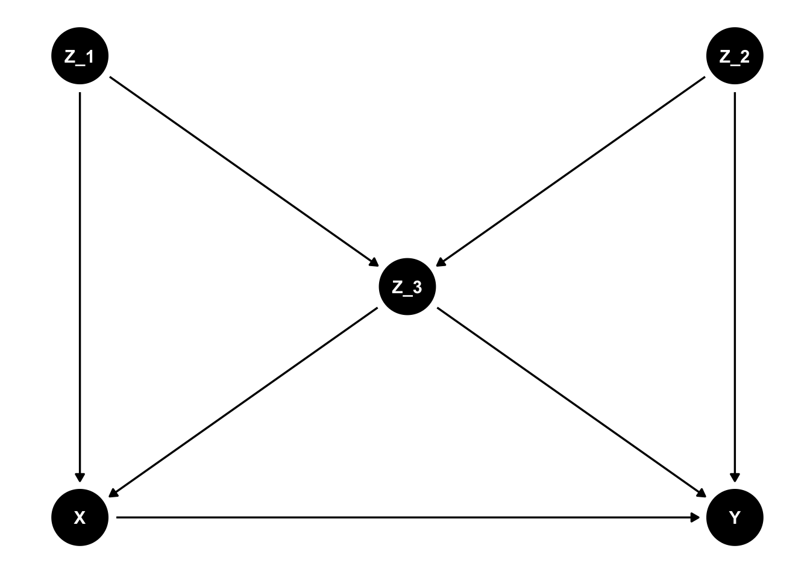

10.10 Causality
This lecture covers a selected topic on causaliy leading to the so called adjustment formula. We mostly follow Peters, Janzing, and Schölkopf (2017).
Definition. (Graph Terminology)
We are given a random variables \(X = (X_1,...,X_p)\) with index set \(V := \{1,...,p\}\).
A graph \(G = (V,\mathcal E)\) consists of
- nodes or vertices \(V\) and
- edges \(\mathcal E \subseteq V^2\) with \((v, v) \notin \mathcal E\) for any \(v \in V\).
A node \(k\) is called a
- parent of \(j\) if \((k,j)\in \mathcal E\) and \((j,k)\notin \mathcal E\)
- The set of parents of \(k\) is denoted by \(pa_G(k)\)
- a child if \((j,k) \in \mathcal E\) and \((k, j) \notin\mathcal E\).
- The set of childrens of \(k\) is denoted by \(ch_G(k)\)
Two nodes \(k\) and \(j\) are adjacent if either \((k,j)\in \mathcal E\) or \((j,k) \in \mathcal E\).
We say that there is an undirected edge between two adjacent nodes \(k\) and \(j\) if \((k, j) \in \mathcal E\) and \(( j, k) \in \mathcal E\).
An edge between two adjacent nodes \((k,j)\) is directed if \((k,j)\in \mathcal E\) and \((j,k) \notin \mathcal E\) or vice versa.
- We write \(k \rightarrow j\) for \((k, j) \in \mathcal E\), \((j, k) \notin \mathcal E\) and \(j \rightarrow k\) for \((j, k) \in \mathcal E\), \((k, j) \notin \mathcal E\)
\(G\) is called directed if all its edges are directed.
A path in \(G\) is a sequence of (at least two) distinct vertices \(k_1,\dots ,k_m\), such that there is an edge between \(k_l\) and \(k_{l+1}\) for all \(l = 1,\dots ,m − 1\).
If \(k_{l-1} \rightarrow k_l\) and \(k_{l+1} \rightarrow k_l\) (\(k_{l-1} \rightarrow k_l\leftarrow k_{l+1}\)), \(k_l\) is called a collider relative to this path.
If \(k_l \rightarrow k_{l+1}\) for all \(l\), we speak of a directed path from \(k_1\) to \(k_m\)
- In this case, We call \(k_1\) an ancestor of \(k_m\) and
- \(k_m\) a descendant of \(k_1\).
\(G\) is called a directed acyclic graph (DAG) if all edges are directed and there is no pair \((j,k)\) with directed paths from \(j\) to \(k\) and from \(k\) to \(j\).
Definition. (Pearl’s d-separation)
In a DAG \(G\), a path between nodes \(k_1\) and \(k_m\) is blocked by a set \(S\) (with neither \(k_1\) nor \(k_m\) in \(S\) ) if there is a node \(k_l\) fulfilling one of the two points:
- \(k_l \in S\) and \[\begin{align} k_{l-1} & \rightarrow k_l \rightarrow k_{l+1} \\ \text { or } \ k_{l-1} & \leftarrow k_l \leftarrow k_{l+1} \\ \text { or }\ k_{l-1} & \leftarrow k_l \rightarrow k_{l+1} \end{align}\]
- neither \(k_l\) nor any of its descendants is in \(S\), and \[ k_{l-1} \rightarrow k_l \leftarrow k_{l+1} \]
In a DAG \(G\), we say that two disjoint subsets of vertices \(A\) and \(B\) are \(d\)-separated by a third (also disjoint) subset \(S\) if every path between nodes in \(A\) and \(B\) is blocked by \(S\).
- We then write \[ A \perp\!\!\!\!\perp_G B \mid S \]
Definition. (Structural causal models) A structural causal model (SCM) \(\mathfrak{C}:=\left(S, P_N\right)\) consists of a collection \(S\) of \(p\) (structural) assignments
\[ X_j:=f_j\left(pa(j), N_j\right), \quad j=1, \ldots, p, \]
and a distribution \(P_N=\bigtimes_{j=1}^p P_{N_j}\) of jontly independent noise variables \(N_1\dots,N_p\).
Note: An SCM \(\mathfrak{C}\) defines a unique graph \(G\) and a unique distribution, \(P^{\mathfrak{C}}_X\), over the variables \(X_1,...,X_p\). The reverse is not true.
Example. (Structural causal models with acyclic graph structure) \[\begin{align*} & X_1:=f_1\left(X_3, N_1\right) \\ & X_2:=f_2\left(X_1, N_2\right) \\ & X_3:=f_3\left(N_3\right) \\ & X_4:=f_4\left(X_2, X_3, N_4\right) \end{align*}\] \(N_1, \ldots, N_4\) jointly independent
Definition. (Interventional distribution/ do-operator)
Consider an SCM \(\mathfrak C := (S,P_N)\) and its entailed distribution \(P^{\mathfrak C}_X\).
We deifine a new SCM, \(\tilde {\mathfrak C}\), by replacing the assignment for \(X_k\) by \[ X_k = \tilde f(\tilde {pa}(k), \tilde N_k). \] The resulting entailed distribution of the new SCM is called interventional distribution. We write short:
\[ do(X_k = \tilde f(\tilde {pa}(k), \tilde N_k)), \quad P_X^{\tilde {\mathfrak C}}=P^{\mathfrak C, do(X_k = \tilde f(\tilde {pa}(k), \tilde N_k))}_X \]
- An intervention can also simply assign a fixed value \(a\) (i.e., \(\tilde N_k=a\) (deterministic) and the set of parents is empty).
- This is called an atomic or deterministic intervention and can be denoted by \(do(X_k = a)\).
Definition. (Total causal effect) Given an SCM \(\mathfrak{C}\), we say there is a total causal effect from \(X\) to \(Y\) if
\[ X \perp\!\!\!\!\perp Y \quad \text { in } P_{{X}}^{\mathfrak{C} ; d o\left(X=\tilde{N}_X\right)} \]
for some random variable \(\tilde{N}_X\).
Note: A directed path from \(X\) to \(Y\) is a necessary but not sufficient condition for a total causal effect (effects can cancel out). In contrast, a directed path from \(X\) to \(Y\) or \(Y\) to \(X\) is NOT necessary for \(X\) and \(Y\) to be correlated.
Definition. (Markov property) Given a DAG \(G\) and an entailed joint absolutely continuous distribution \(P_{{X}}\), this distribution is said to satisfy
- the global Markov property with respect to the DAG \(G\) if \[ {A} {\perp\!\!\!\!\perp }_{\mathcal{G}} {B}|{C} \Rightarrow {A} {\perp\!\!\!\!\perp } {B}| {C} \] for all disjoint sets of nodes \({A}, {B}, {C}\).
- the local Markov property with respect to the DAG \({G}\) if each variable is independent of its non-descendants given its parents, and
- the Markov factorization property with respect to the DAG \({G}\) if \[ p({x})=p\left(x_1, \ldots, x_d\right)=\prod_{j=1}^d p\left(x_j \mid {pa}(j)\right). \]
Theorem. (Equivalence of Markov properties, see e.g. Lauritzen (1996)) If \(P_X\) is absolutely continuous, then all three Markov properties above are equivalent.
Remark (SCM induced Graph is Markov): Note that every SCM induced Graph satisfies the markovian properties.
Proposition. (Adjustment formula) Consider an SCM over variables \({V}\) with \(X, Y \in {X}\) and \(Y \notin {pa(X)}\).
\(Z\) is called valid adjustment set if it fulfills one of the three following conditions
- “parent adjustment”: \[ {Z}=pa(X) \]
- “backdoor criterion”: \({Z} \subseteq {V} \backslash\{X, Y\}\) with
- \({Z}\) contains no descendant of \(X\) AND
- \({Z}\) blocks all paths from \(X\) to \(Y\) entering \(X\) through the backdoor \((X \leftarrow \ldots)\).
- “toward necessity”: \({Z} \subseteq {V} \backslash\{X, Y\}\) with
- \({Z}\) contains no descendant of any node on a directed path from \(X\) to \(Y\) (except for descendants of \(X\) that are not on a directed path from \(X\) to \(Y\) ) AND
- \({Z}\) blocks all non-directed paths from \(X\) to \(Y\)
If \(Z\) is a valid adjustment set, then \[ p^{\mathfrak{C}, d o(X=x)}(y)=\int p^{\mathfrak{C}}(y \mid x, {z}) p^{\mathfrak{C}}({z}) \mathrm dz. \]
Proof.
We only proof “parent adjustment” and “backdoor criterion”. “towards necessity” can be looked up in Shpitser, VanderWeele, and Robins (2010)
We call the interventional density \(\tilde p\) and the original density \(p\).
For the parent adjustment, \(Z=pa(X)\), note that
\[\begin{align}
\tilde p (y|z)&= \tilde p (y|x,z)= p (y|x,z) \\
\tilde p(z)&= p(z)
\end{align}\]
Hence,
\[ p(y|do(X=x))= \tilde p(y)= \int \tilde p(y|z) \tilde p(z) \mathrm dz = \int p(y|x,z) p(z) \mathrm dz \]
- For the backdoor adjustment, let \(Z\) fulfill (i) and (ii) and let \(S=pa(X)\). We have \[\begin{align} p(y|do(X=x))&\stackrel{\text{parent adjustment}}{=} \int p(y|x,s) p(s) \mathrm ds\\ &=\int p(s)\int p(y,z|x,s) \mathrm ds \mathrm dz \\ &\stackrel{\text{Bayes formula}}{=}\int p(s)\int p(y|x,s,z) p(z|x,s) \mathrm ds \mathrm dz \\ &\stackrel{\text{(ii):} Y {\perp\!\!\!\!\perp } {S}| {X,Z}}{=}\int p(s)\int p(y|x,z) p(z|x,s) \mathrm ds \mathrm dz \\ &\stackrel{\text{(i):} X {\perp\!\!\!\!\perp } {Z}| {S}}{=}\int p(s)\int p(y|x,z) p(z|s) \mathrm ds \mathrm dz \\ &\stackrel{p(z)= \int p(s)p(z|s) \mathrm ds}{=}\int p(y|x,z) \mathrm dz \end{align}\]
Intuition behind backdoor criterion: Backdoor paths carry spurious associations from \(X\) to \(Y\). Blocking all backdoor paths ensures that measured assoziation is causal. We don’t include descendants of \(𝑋\) that are also ancestors of \(𝑌\) because this would block a causal path. We don’t include descendants of \(𝑋\) that are also descendants of \(𝑌\) because this would introduce collider bias.

Questions.
- Do we need to observe \(Z_1\) to be able to calculate \(P(Y|do(X=x))\)?
- What are all valid adjustment sets for calculating \(P(Y|do(X=x))\)?
Solution. All valid adjustment sets are \[ \{Z_1,Z_3\},\{Z_2,Z_3\},\{Z_1,Z_2,Z_3\}. \] In particular, \(Z_1\) is not needed need to calculate \(P(Y\vert do(X=x))\).
Measuring Total causal effect. How can we calculate \(\mathbb E[Y\vert do(X =x)]-\mathbb E[Y]\), i.e. the total causal effect of \(X=x\) on \(Y\). If we have a valid adjustment set \(Z\), then \[\begin{align} E[Y\vert do(X =x)]&= \int y p^{d o(X=x)}(y) \ dy \\ &= \int \int y p(y\vert x,z)p(z) \ dy \ dz \\ &= \int p(z) \int y p(y\vert x,z)\ dy \ dz \\ &= \int p(z) \mathbb E[ Y\vert X=x,Z=z]\ dz . \end{align}\] Which can be estimated from iid observations of \((X,Z,Y)\).
Counterfactual fairness. Assume \(U\) is a set of protected features. For example \(U=\{\text{gender, ethnicity}\}\). Let \(U \cup V=\{1,\dots, p\}, U\cap V=\emptyset\). Can we debias an algorithm predicting \(\mathbb E[Y\vert X=x]\) such that it does not use information contained in \(X_U\); neither directly nor indirectly. Kusner et al. (2017) introduced the notion of counterfactual fairness. We here present a sufficient condition: Given a structural causal model of \((X,Y)\), an estimator is counterfactual fair if it is a function of the non-descendents of \(X_U\). A counterfactual estimator is in particular given by \(\hat m_n^{debiased}(x_v)=E[\hat m_n(X)\vert do(X_v =x_v)]\)